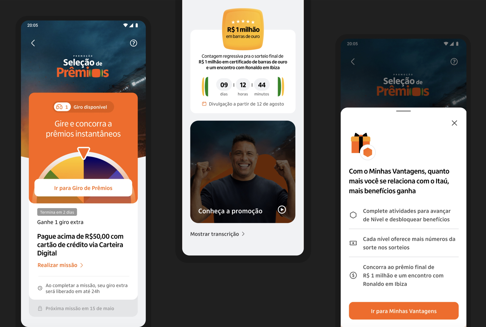
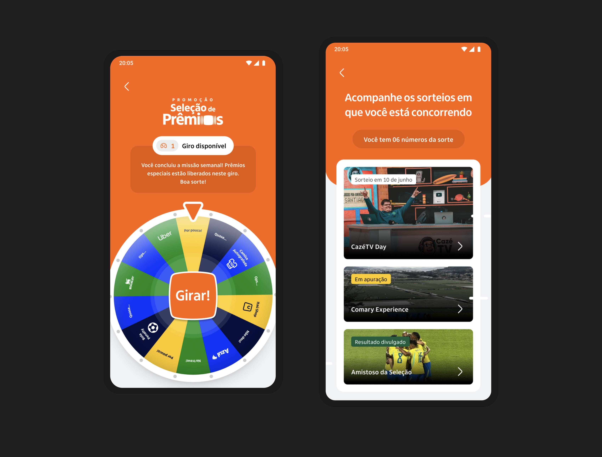
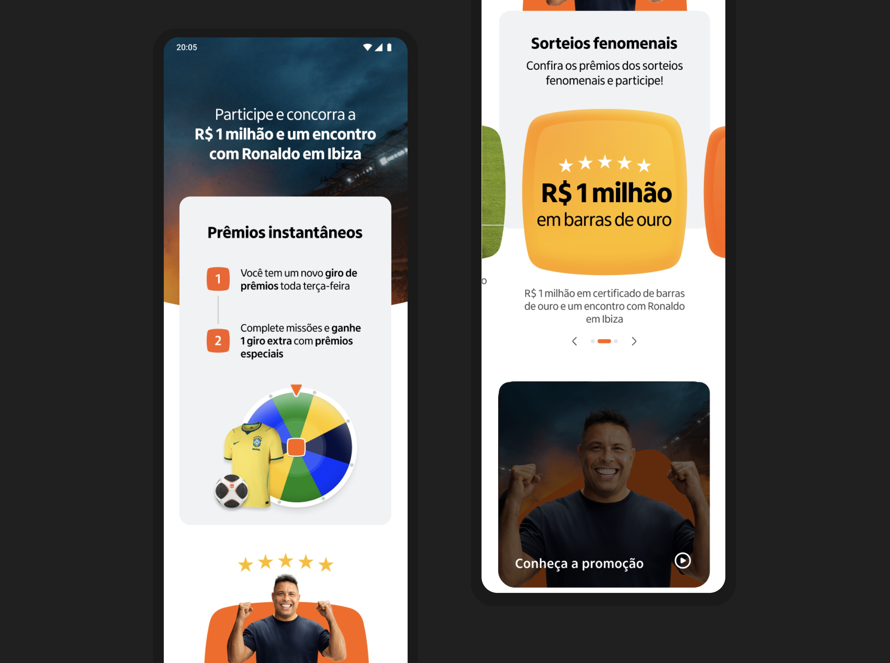
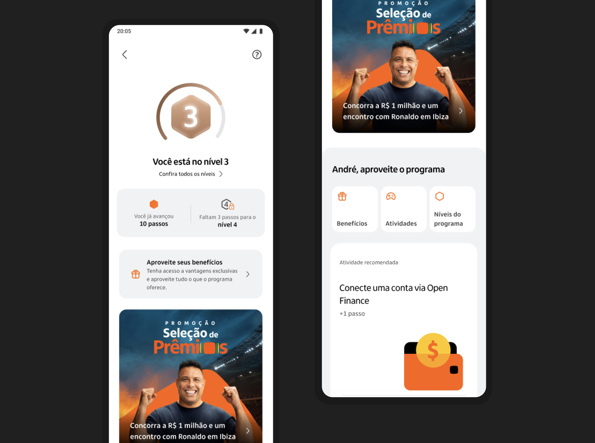

What I did
- Game mechanic design with product, engineering and the sweepstake partner
- Gamification research into what makes people return to a game
- Interaction design for the weekly spin, missions and prize journeys
- Content design with legal, turning compliance into plain language
- Coordination across legal, marketing, engineering and brand assets
- Review with superintendents and directors through to launch
Outcomes
4.3MM
Customers enrolled in the campaign
1MM
Of those net-new to Minhas Vantagens
11MM
Prize spins executed
4.6MM
Missions completed
86%
Campaign opt-in conversion rate
580
Support cases across the whole campaign — spin accounting, sign-up and rules; low friction relative to volume
Overview
Itaú ran a promotional campaign across the 2026 World Cup, built inside Minhas Vantagens, the bank’s relationship programme, and fronted by Ronaldo. Customers earned lucky numbers and spins by completing weekly missions — registering a Pix key, connecting Open Finance, setting up automatic payments, starting to invest — which entered them into instant prizes and a set of headline draws, up to a million reais in gold bars, a trip, and dinner with Ronaldo. More than twenty products across the bank were wired into the mission system.
The hard part was not the interface. A spinning wheel with a gold jackpot behind it is, visually, the language of gambling, and this had to read as the opposite: a bank rewarding people who were already its customers. Three decisions carried that. Nothing was ever staked — customers did not bet, they earned chances, so there was no way to lose anything. Every customer received a lucky number each week simply for being a client, with more arriving the more they used the bank, which made the mechanic a reward rather than a lottery ticket. And the visual language was deliberately restrained, close to the bank’s own voice rather than to the loud register the category invites.
I worked closely with legal for the whole campaign, and the compliance work ended up being content design rather than legal notices. The rules had to be present at the moment they mattered, in words a customer could act on, with no fine print and no asterisks — while keeping the playful tone the mechanic needed to work at all. Alongside that ran research into game design: what makes a weekly loop worth coming back to, how instant reward and slower progression sit together, and why a player returns on week six. It launched to the whole customer base at once, which made the first hour its own design constraint.

3 takeaways
- 01Rewarding, never wagering
- 02Compliance is content design
- 03Borrowed from games, not from casinos
01
Rewarding, never wagering
Nothing is ever staked
The mechanic was built so a customer could not lose anything: chances were earned by doing something, never bought or bet. That single rule did more for trust than any amount of visual reassurance, and it made every screen easier to write — there was never a loss to explain away.
Restraint reads as credible
The category pulls hard toward flashing, loud, jackpot-styled design. Staying close to the bank’s own visual language cost some immediate excitement and bought the thing it actually needed, which was for a customer to believe the prize was real.

02
Compliance is content design
No asterisks
Rather than push the rules into a regulation document nobody opens, we put what mattered where the decision happened, in the customer’s words — when a spin unlocks, how long a mission takes to credit, when a result is published. Legal reviewed language rather than approving disclaimers, which meant the constraint shaped the writing instead of arriving after it.
Clear enough to be quiet
Across a campaign of this scale, support tickets stayed in the hundreds, and the recurring ones were about counting spins and registration rather than confusion about how to win. For a promotional mechanic that is the result worth reporting — it means the rules landed the first time.

03
Borrowed from games, not from casinos
Designing the return, not the visit
The team studied what genuinely brings people back to a game: a weekly rhythm, a reward that arrives immediately, and a slower progression underneath it. Level in the programme meant more lucky numbers, so a long-standing customer saw the relationship he already had reflected in his odds.
The first hour is a design problem
Launching to the entire base meant an enormous spike in the first minutes rather than a curve. Planning that with engineering and marketing ahead of time — what loads first, what can wait, what a customer sees if something is slow — was as much part of the design as the screens themselves.
The platform held. Reach on campaign communications ran to 19.7MM, and enrolment came in at roughly ten times the previous internal benchmark campaign.
- 18×
- Screen views, within 50 minutes
- 4.8×
- Total requests, within 50 minutes
- 5×
- Requests per second, within 50 minutes
- 3–3.8×
- Peak burst in a 3-minute window (21:40)
- 13×
- Opt-ins in under an hour, at the 4h mark

What made it work
- Reused the existing LE3 solution for partner campaigns rather than building new
- Near-real-time mission data over Kafka, which made new product types possible inside the programme
- The Platform Evolution Program ran ahead of launch to close resilience, security and scalability gaps
- Devin used for structural delivery and bug fixes
- Targeted multichannel campaigns and non-QR advertising both drove opt-in growth — conversion held across acquisition paths